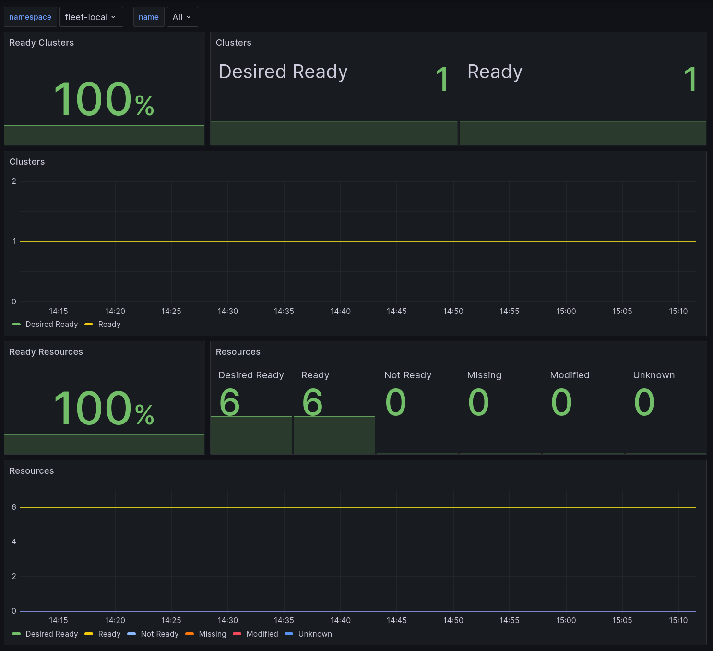

Fleet Dashboards
For Support
Patrick Seidensal <pseidensal@suse.com>
Table of Contents
- Installation
- Where to Find the Dashboards?
- Dashboard Organization
- Tour of Dashboards
- Troubleshooting
- Questions
Installation
Just install therancher-monitoring chart

Where to Find the Dashboards?
Currently, only in Grafana
Where to Find the Dashboards?
Embedding into Rancher UI WIP
-
Proposal
-
Resulting Rancher Dashboard issue
-
UI/UX issue
Dashboard Organization
Tour of Dashboards
- GitRep
- Bundle
- BundleDeployment*
- Cluster
- ClusterGroup
- Controller-Runtime*
*Not to be embedded in Rancher UI
GitRepo
Cluster
ClusterGroup

Bundle

BundleDeployment
Controller Runtime
Troubleshooting
Troubleshooting
#### Data Flow
Troubleshooting
#### Dashboard X doesn't show data *** - Just installed? - Wait for Prometheus to be configured (can take a few minutes!) - Wait for the data to be scraped (takes a few seconds) - Metrics will only appear if the corresponding resource is created, e.g. GitJobTroubleshooting
#### Dashboard X doesn't show data *** - Check the configured time range Troubleshooting
#### Dashboard X doesn't show data *** - Refresh the dashboard Troubleshooting
#### I don't see *any* data *** ```mermaid flowchart LR G[Grafana] --> P[Prometheus] ``` - Check the data source in Grafana - Check the scrape configuration in Prometheus - Check the ServiceMonitor resource - Check the Fleet service - Check the Fleet controllerTroubleshooting
#### Wrong Data *** - Not a dashboard issue if Fleet resources show the same values in their statusTroubleshooting
#### Missing Data *** - Monitoring collects data every X secondsOutlook
- More dashboards
- Embedding into Rancher UI
- Alerts